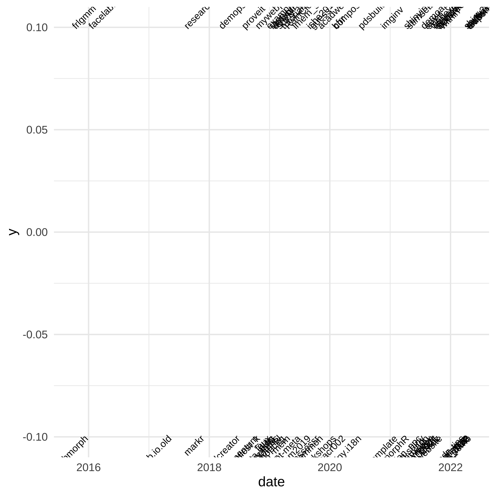

library(tidyverse) # for data wranglinglibrary(lubridate) # for dateslibrary(jsonlite) # for reading JSON fileslibrary(showtext) # for custom fontslibrary(ggtext) # for adding the twitter logotheme_set(theme_minimal(base_size =16))font_add("fa-brands", "fonts/fa-brands-400.ttf")showtext_auto()
21.1 GitHub Data
I used the GitHub API to get info on all my repositories.
ggplot(repos, aes(x = date, label = name, y = y, hjust = hjust)) +geom_text(angle =45)

OK, I need to control the y-axis limits. I’ll also add a horizontal line for the timeline and a line from each label to the timeline.
Code
ggplot(repos, aes(x = date, label = name, y = y, hjust = hjust)) +geom_text(angle =45) +geom_segment(aes(xend = date), yend =0, color ="grey") +geom_hline(yintercept =0, size =3, color ="dodgerblue") +scale_x_date(expand =expansion(c(.1, .2))) +coord_cartesian(ylim =c(-.6, .6))
21.5 Facet by year
Better, but still crowded. What If I facet by year?
Code
repos$year <-year(repos$date)ggplot(repos, aes(x = date, label = name, y = y, hjust = hjust)) +geom_text(angle =45) +geom_segment(aes(xend = date), yend =0, color ="grey") +geom_hline(yintercept =0, size =3, color ="dodgerblue") +scale_x_date(expand =expansion(c(.2, .2))) +coord_cartesian(ylim =c(-.6, .6)) +facet_grid(year~.)
The y-axis scale needs to be set to “free”. This doesn’t work with facet_grid(), so I’ll change it to facet_wrap(). I also changed the figure dimensions to 16x16 and set clip = "off" in coord_cartesian() to avoid some of the longer labels from getting clipped.
The scales aren’t all the same. I’m going to use a hacky solution and add labels for January 1 and December 31 every year, but give them a blank string for a name.
I’m also going to reduce the label angle to 30 degrees and make the timeline a different colour each year. I couldn’t set the colour of geom_hline() using aes() unless I was also setting yintercept in the mapping.
That’s good until the last few months. I’ve been making too many repos! I’ll manually adjust those.
Code
repos3 <- repos2 %>%mutate(y =case_when( name =="msc-data-skills"~-.2, name =="NCOD2021"~-.2, name =="30DCC-2022"~-.2, name =="APA_TOP"~-.3, name =="knitr"~ .2, name =="statistical_inferences"~ .3, name =="waffle"~ .37, name =="shiny2022"~ .41, name =="ug1-practical"~ .2, name =="lmem_sim_private"~ .2, name =="webexercises"~ .2, name =="reprores_2021"~ .22, name =="debruine.github.io"~ .2, name =="statswithr"~ .15, name =="quarto_demo"~-.35,TRUE~ y ))
I used the code from Day 2.4 to change the ugly green to yellow.
Code
ggplotColours <-function(n, h =c(0, 360) +15){ h[2] <- h[2] -360/nhcl(h = (seq(h[1], h[2], length = n)), c =100, l =65)}linecol <-ggplotColours(8)linecol[3] <-"#F5C748"
I’m also going to remove the x-axis expansions, since it doesn’t make sense to have dates before January or after December each year, and add a plot margin using theme() to make room for labels that go off the edge a bit.